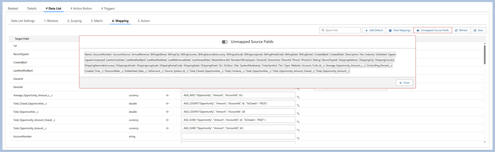

<article>
    <p>
      The "Unmapped Source Fields" button identifies source fields that 
      are not yet mapped to any target field. It provides a quick way to 
      review and ensure all necessary fields are considered for mapping.
    </p>
  </article>
  
  